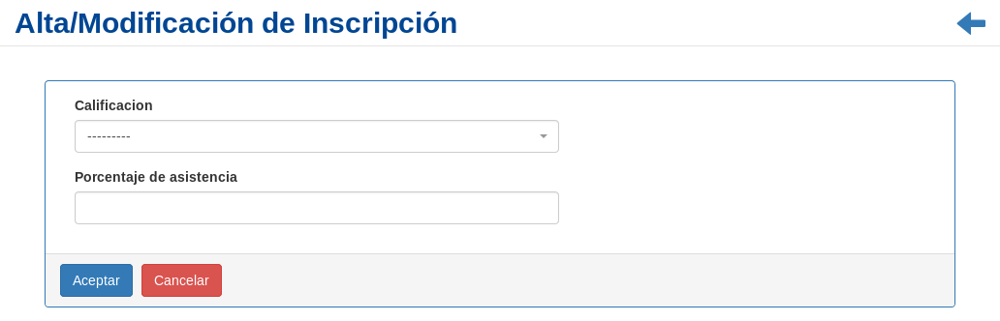

Cierre del Curso¶
Se presentará una pantalla que contendrá un listado con todos los alumnos inscriptos en un Curso particular que se encuentra registrado en el sistema hasta la fecha.

Junto con el listado, se presentarán un conjunto de funcionalidades que permitirán manipular cada Alumno inscripto en el curso.
Estas funcionalidades son:
Modificar Calificación/Asistencia del Alumno¶
Si el usuario desea agregar los datos de una Calificación/Asistencia de un alumno, deberá seleccionar en la columna de acciones asociado a la Inscripción y presionar el ícono Modificar.
Una vez realizado el paso anterior, el sistema lo redirigirá a la siguiente pantalla:
En esta parte al usuario se le presentará un formulario y deberá actualizar los datos asociados a la Inscripción.
Atención
SOLO SE PODRÁ INGRESAR EL PORCENTAJE DE ASISTENCIA Y CALIFICACIÓN UNA SOLA VEZ LUEGO DE INGRESAR LOS DATOS Y POSTERIORMENTE CONFIRMARLOS.
El sistema no permitirá volver a modificar los datos del alumno.
Una vez completado el formulario, el usuario deberá presionar el botón Aceptar y el sistema se encargará de actualizar los datos de la Inscripción seleccionada.